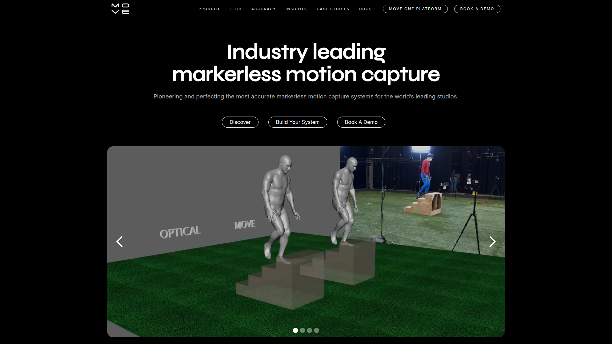

MOVE.AI · ENTERPRISE MOCAP
Move.AI 是英國 AI 動捕公司（2019 年成立），開發企業級無標記動作捕捉技術。其旗艦產品 Genesis 是首款聲稱可達「光學系統品質」的 AI 動捕方案，目標客群為大型遊戲/VFX/電影工作室。
支援多達 20+ 人同時追蹤、BVH/FBX/GLB 多格式輸出、本地端 on-premise 部署（無雲端依賴）、有即時串流模型和完整 REST API。EA、Ubisoft 等 AAA 工作室已採用驗證。

Move.AI 提供多個模型針對不同場景：Genesis（最高品質離線）、s2/m2（含手部）、rt1/rt2（即時串流）。用普通攝影機（iPhone/GoPro/Cinema Camera）替代 $50,000+ 的光學系統。
⚠️ 傳統光學 Mocap
✅ Move.AI 方案
Move.AI 企業級無標記動捕系統展示，包含多人追蹤、即時串流和品質比較。
Move.AI — Enterprise Markerless Motion Capture
Move.AI 提供業界最完整的輸出格式支援和最高的追蹤人數。Genesis 模型聲稱品質可媲美 Vicon 等光學系統，且支援 100% 本地端部署。
業界最高多人追蹤能力
+FBX/GLB/USDZ/C3D/JSON
100% on-premise 無雲端依賴
即時串流
rt1/rt2 模型支援低延遲即時動捕
手部追蹤
s2/m2 模型內建手指追蹤
生物力學
輸出關節力矩/地面反力數據
Move.AI 提供完整的引擎整合方案，支援所有主流遊戲引擎和 DCC 工具。其 REST API 可用於批次處理大量動畫。Blender 有官方外掛可直接匯入。
Unreal 5
FBX/BVH 匯入
Unity
FBX 直接匯入
Blender
官方外掛
Maya
FBX/BVH
REST API
批次自動化
生物力學
C3D/JSON 輸出
Move.AI 採用企業級定價模式。有免費試用方案（Move One 單人單攝影機），但完整功能需要付費訂閱。Genesis 本地部署為最高階方案。
按需求報價，有免費試用入口
Move One
免費試用
單人、單攝影機、基礎品質
Pro Plans
訂閱制
多人、多攝影機、高品質
Genesis
企業報價
本地部署、光學等級、20+人
Move.AI 定位為市場上品質最高的 AI 動捕方案，但價格和使用門檻也相對較高。適合有預算的專業團隊，不太適合獨立開發者。
✅ 優點
❌ 缺點
Move.AI 和 Kimodo 的整合空間在於：Move.AI 處理「需要真人動作參考」的高品質動捕場景，Kimodo 處理「純文字描述生成」的快速量產場景。兩者的 BVH 輸出可共用同一套後處理 pipeline。
格式相容
Move.AI 直接輸出 BVH，與 Kimodo BVH 使用相同的 Retarget → Foot Fix → Root Motion pipeline。
場景互補
主角/Boss 動作 → Move.AI（高品質）。NPC 通用動作 → Kimodo（快速量產）。
API 串接
Move.AI REST API 可與 Kimodo 整合到同一自動化工作流。
在 AI 動作量產工作流中，Move.AI 佔據「高品質影片動捕」的頂端位置。它適合預算較高、對品質要求極高的正式產出（主角動作、過場動畫），而非大量 NPC 通用動作。
Move.AI 是市場上品質最高但價格也最高的 AI 動捕方案。適合有預算的團隊用於關鍵動作（主角、Boss、過場），不適合大量通用動作量產。
品質等級
⭐⭐⭐⭐⭐
性價比
⭐⭐⭐
易用性
⭐⭐⭐
Pipeline 整合
⭐⭐⭐⭐⭐
量產適合度
⭐⭐
獨立開發者友善
⭐⭐
🟡 值得關注 — 建議行動
MotionLab Research · 2026-06-19 · move.ai